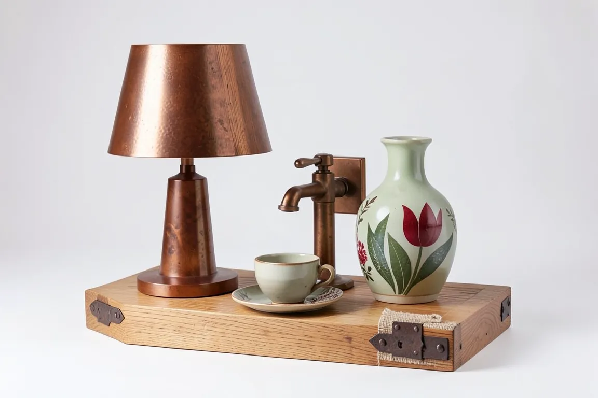

industrial · 1880–1918 · also: Arts and Crafts household goods, Craftsman object, Cotswold craft
The handmade household goods of the reform movement: oak furniture with exposed joints, hammered copper and iron, stoneware and wool, made in small workshops against the machine ornament of the age.

Core thesis
A good object shows the hand and the material that made it: the joint, the hammer mark and the grain are the ornament, and the maker is a free craftsman.
Design principles
Leave each joint in view: a through tenon, a peg, a dovetail or a wedge.
Use oak, ash and elm in the solid, with a straight grain and a wax or oil finish.
Hammer metal by hand, and leave the hammer marks; copper and iron are the main metals.
Use hand-forged hinges and straps of 3 to 6 mm iron on doors and chests.
Put 1 stylised plant motif on a surface, such as a leaf, a tulip or a pomegranate, in flat colour.
Use earth colours: moss green, madder red, indigo blue and the brown of oak.
Make each piece in a small shop, and let a part differ a little from the next.